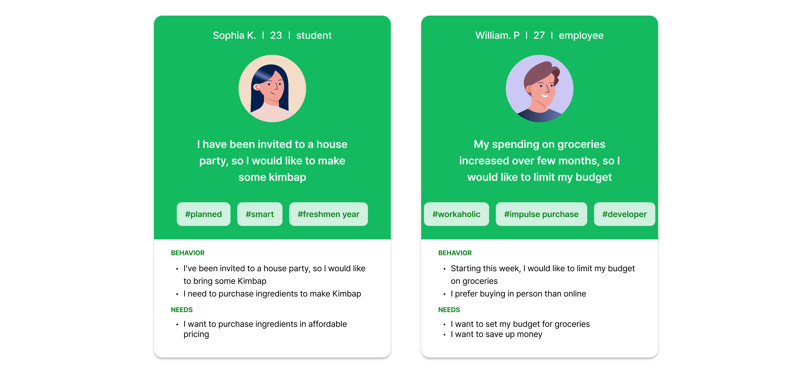

Grocery on Budget
A platform that allows users to compare groceries based on their location, check item stocks, and set their grocery budget
Role: Design 80%, Branding 80%
Personal Project
OVERVIEW
Background
In response to economic shifts, New Yorkers are increasingly turning to home cooking amidst a 24% surge in food ingredient prices since 2020. To address this trend, "Grocery on Budget" emerges as a solution, offering a convenient platform for comparing nearby mart prices, inventory lists, and setting personal budgets, empowering users to make cost-effective choices with ease.
Design Process
In response to economic shifts, New Yorkers are increasingly turning to home cooking amidst rising food ingredient prices, which have surged by 24% since 2020. To address this, "Grocery on Budget" emerges as a solution, offering a convenient platform for comparing nearby mart prices, empowering users to make cost-effective choices with ease.
- Target Users
- Students in nyc, seeking to maintain their budget
- Employees in nyc, aiming to save more than spending
- Research Methods
- Virtual interviews
- Google forms
- Research online
Desk Research
Research indicated that inflation and tipflation is giving pressure for people to dine out.
The cost of dining out in the U.S. rose by 8.2% in 2023 compared to 2022. The recent surge of 25% in 'tip inflation' is leading people to avoid the culture of eating out.


User Research
We have conducted interviews with students and employees currently living in NYC.

Personas
Personas are set according to the data collected

User Journeys


Card sorting

Solutions
Proposing service where users could compare prices and see stocks of offline groceries
Project Goals
Allow users to compare prices of grocery stores and also check on the inventory so that users could save time and money

Branding

Design Systems

Prototype


Project Review
- User research : I have learnt that as a product designer, it is significant to hear user’s voices and implement their feedback into the product.
- Story telling : I have learnt depending on how I tell the story, the entire narrative becomes different.
- In the future I would like to: Try to make it in the mobile version, Interview more people with diverse backgorunds